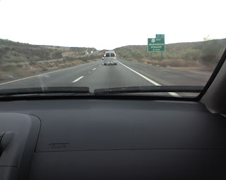

Recovered weblog entry
On the way home

Much of the journey behind us, we travel behind the "useless van". (as my wife calls it, it being inconsistent with its speed..)We were sad to leave the comforts of the cabin behind, a polar opposite to numerous other visits when we had packed up and left not a moment after waking. Maybe it was the unusual quiet of the surroundings, or perhaps the imminent commencement of another work week...we weren't quite ready to leave.I had the great fortune to finish Harry Potter #6 while away. It's always nice to achieve a lazy goal while on vacation, and I had wanted a good start for Harry Potter #7, which is undoubtedly waiting for my arrival on my front porch.A good journey, for sure. No, not necessarily marked by the live blogging I had hoped for...it is decidedly tougher than I had imagined, dividing one's time between relaxing and writing. Truthfully, I hadn't so much as glanced at my phone more than a few times per day, a grand testament to the diversionary successes of our holiday.More to come later, certainly. Thanks for visiting, thanks for the comments. Posted wirelessly!